Astana IT University · Web Technologies
Assignment 2 · AKYL GROUP
The assignment extends the existing real-estate website with three exercises: a geometric composition, a component library and an editorial page with three layouts. The new pages share a green palette, typography and spacing.
The implementation uses HTML and external CSS. There is no JavaScript, Bootstrap or media query in the assignment pages. Layouts adapt using fluid sizing, wrapping and intrinsic content sizes.
https://github.com/akylzhomart699-spec/AKYL-GROUP
Assignment directory: assignment2/
1. Geometric composition and key CSS
2. Five Flexbox components and key CSS
3. Three layouts with identical markup and key CSS
4. Responsive checks and conclusion
Task 1 · Result
A single Grid container has six equal columns and six equal rows. Each colored block occupies the cells required by the supplied drawing.
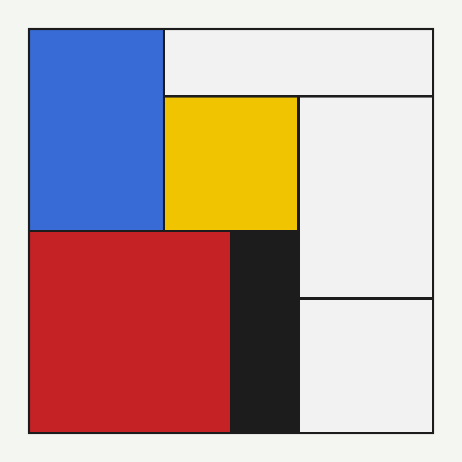
| Block | Rows occupied | Columns occupied |
|---|---|---|
| Blue | 1–3 | 1–2 |
| Top white | 1 | 3–6 |
| Yellow | 2–3 | 3–4 |
| Right white | 2–4 | 5–6 |
| Red | 4–6 | 1–3 |
| Black | 4–6 | 4 |
| Bottom white | 5–6 | 5–6 |
Task 1 · Implementation
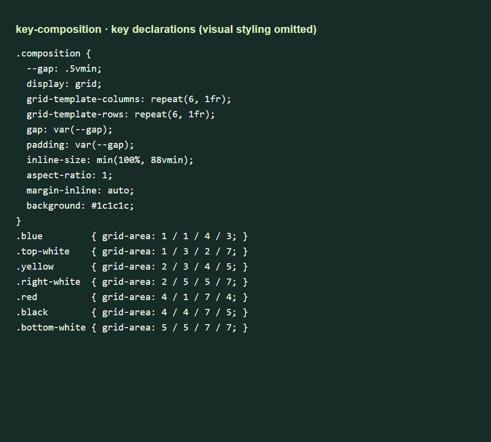
aspect-ratio: 1 keeps the composition square. Its width is limited to the smaller of the available space and 88vmin, so the square cannot become taller than the viewport.
The black container background is visible through the Grid gaps. The blocks do not use borders or margins to create internal lines. Matching container padding creates the outside frame.
The four numbers in grid-area specify row start, column start, row end and column end. End lines are exclusive: the blue block ends at row line 4 and therefore covers three rows.
Task 2 · Components 1–2
The navigation is a wrapping Flexbox row. Links can grow, while an automatic start margin moves the action group to the right edge, including when it wraps.
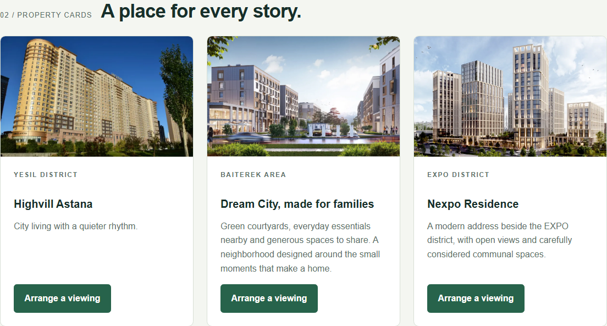
Cards stretch to the height of the tallest card in each row. Each card body is a growing vertical Flexbox container. The button's automatic top margin consumes unused space, so all buttons align without a fixed card height.
Task 2 · Components 3–5
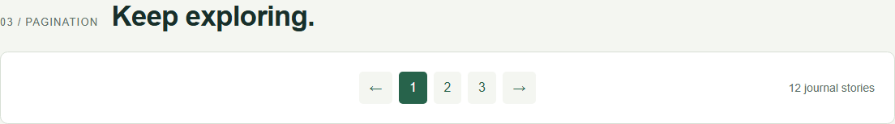
Equal flexible regions on both sides center the page controls. The result count occupies the right region; the parts may wrap on narrow screens.
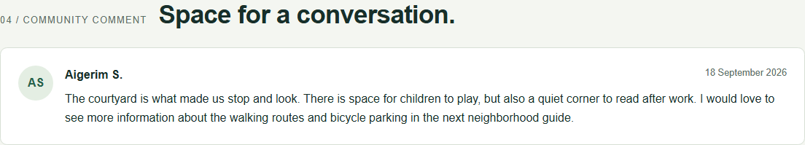
The avatar does not shrink. The text has its own flexible child with a zero minimum inline size and long-word wrapping, so it never flows underneath the avatar.
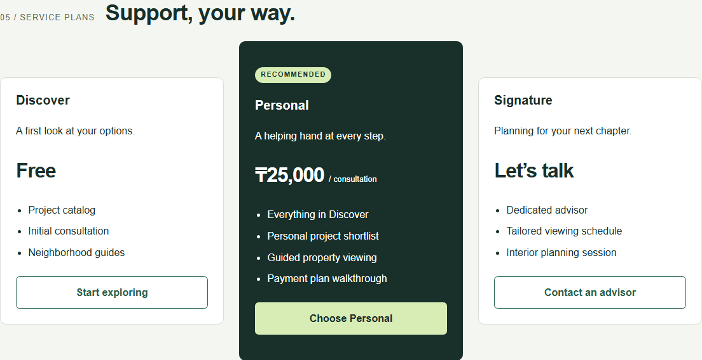
The pricing row vertically centers its cards. The middle card has an extra badge, feature and vertical padding; its height comes from content rather than a fixed value.
Task 2 · Key CSS, part 1
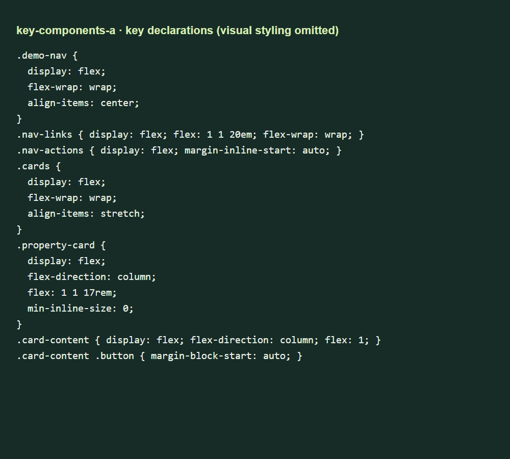
flex: 1 1 17rem is a flexible preferred size: cards may grow or shrink. It is not a fixed width. align-items: stretch equalizes heights within each row.
All five components share shared.css for design tokens and components.css for their layout rules. Grid, floats and fixed layout widths or heights are not used in these components. Only the avatar has a fixed size.
Task 2 · Key CSS, part 2
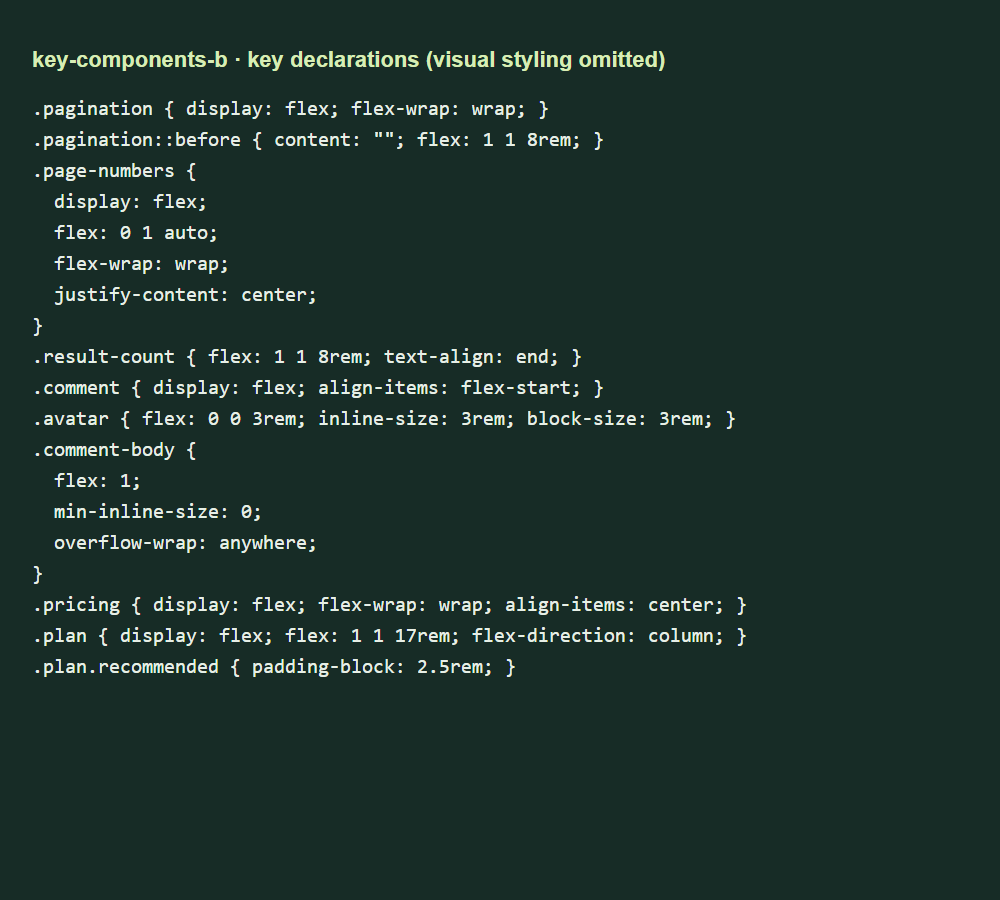
The pagination's empty pseudo-element balances the result count on wide screens. The comment uses separate avatar and text flex items. Pricing uses natural heights and center alignment.
Shared spacing variables keep gaps and padding consistent. Colors, fonts and button styles are reused rather than restyled independently for each exercise.
Task 3 · Card grid
The page contains twelve articles with different title and description lengths. Each article contains an image, a text body and a date.
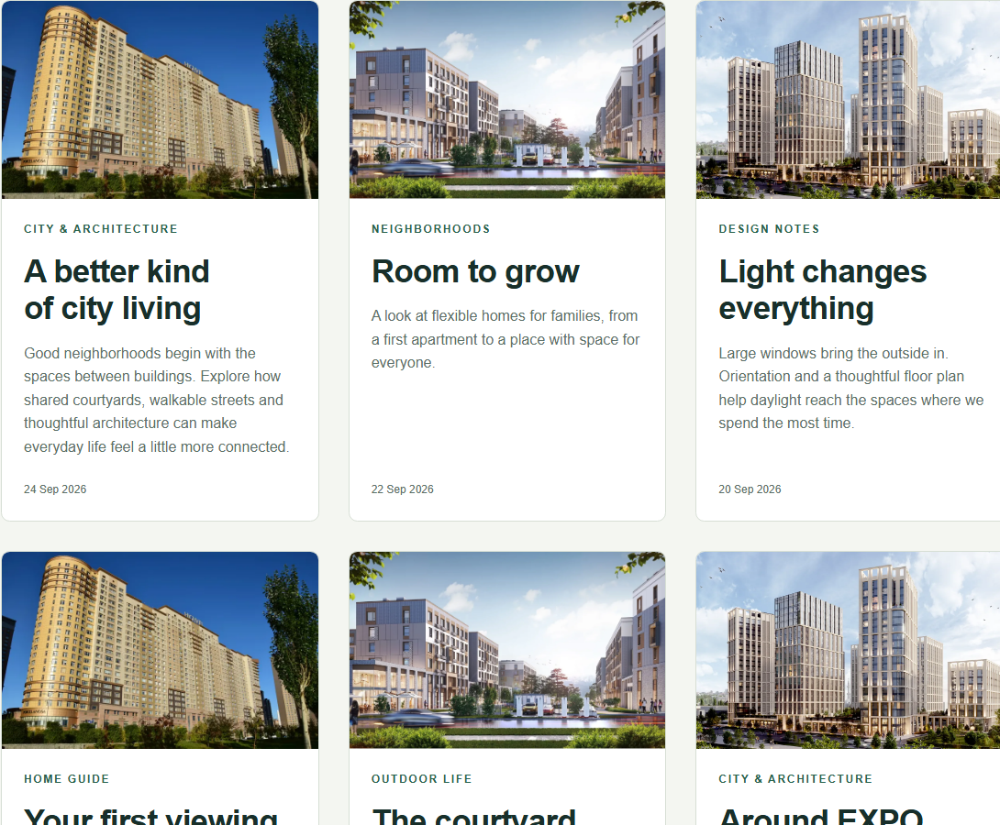
Tool: Grid uses repeat(auto-fit, minmax(min(100%, 19rem), 1fr)) to choose the column count, while Flexbox organizes each card's content vertically.
The inner min() allows a track to fit a narrow container instead of forcing horizontal overflow.
Task 3 · Compact list
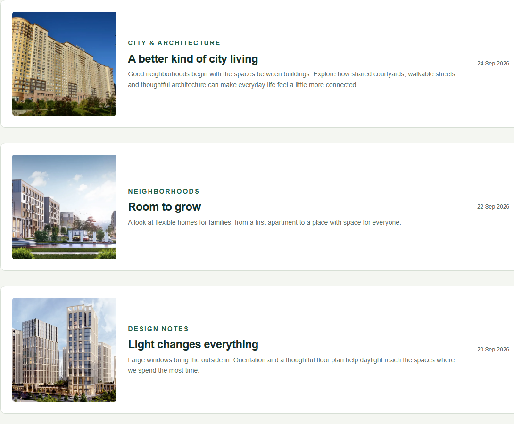
Tool: A single-column Grid stacks the articles; inside each item, a horizontal Flexbox row places the image left, text in the middle and date at the right edge.
The image uses a proportional width. The body can shrink and wrap, while the date keeps a small readable area. No changes to the article HTML are needed.
Task 3 · Magazine
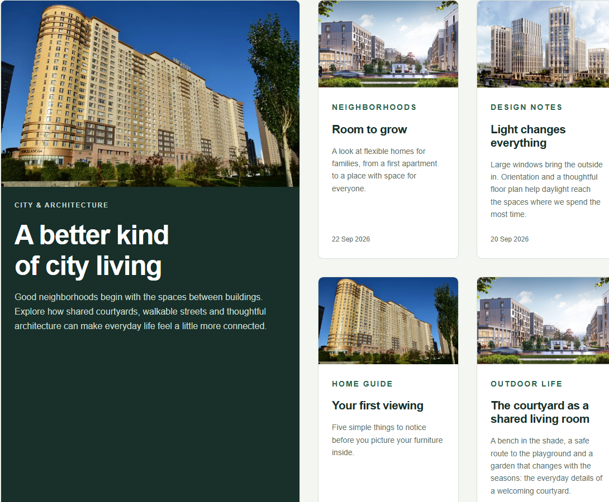
Tool: Grid lets the first item span two columns and two rows, while Flexbox structures the content inside each article.
The track minimum can shrink to half the available width. On narrow screens the lead occupies both columns; on wide screens additional columns appear and smaller stories fill the space beside it.
Task 3 · Key CSS
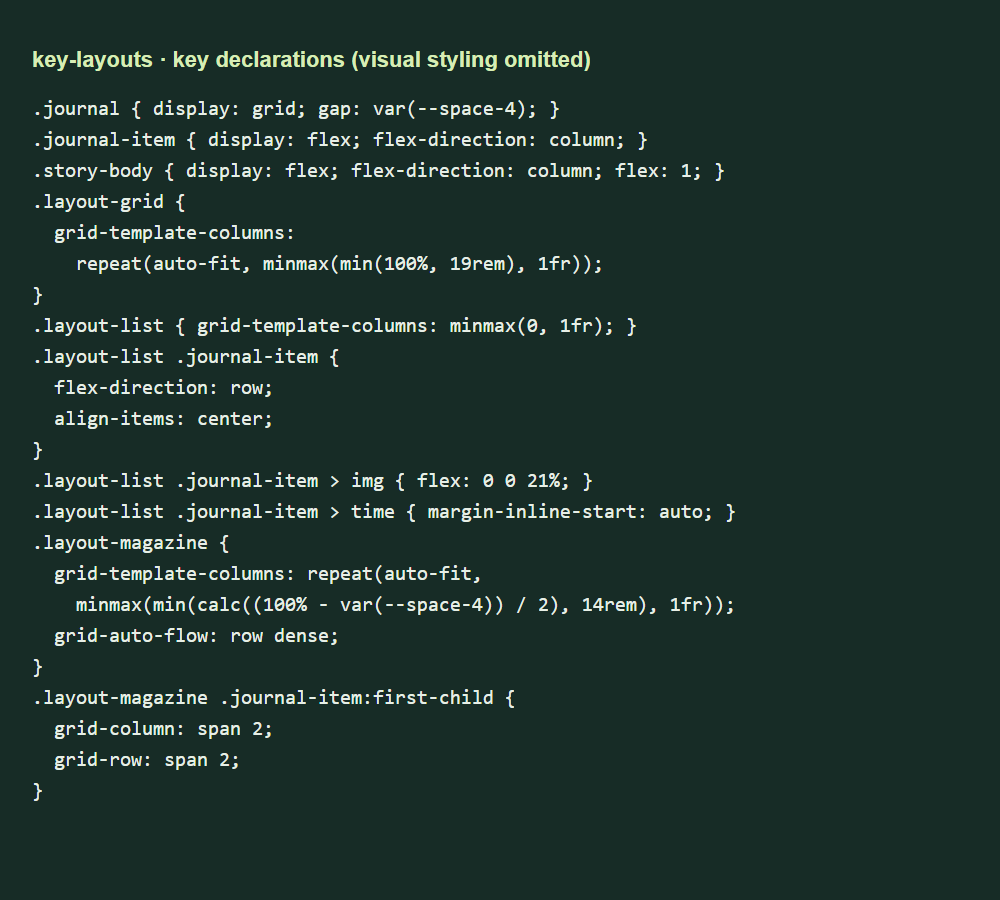
Change the container class from journal layout-grid to journal layout-list or journal layout-magazine. All twelve articles remain untouched.
Three static demonstration files make each mode accessible without JavaScript. A file comparison confirmed they are identical except for this single class value.
Responsive checks
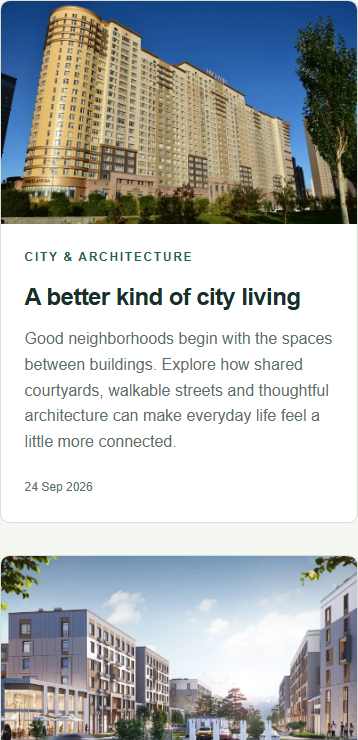
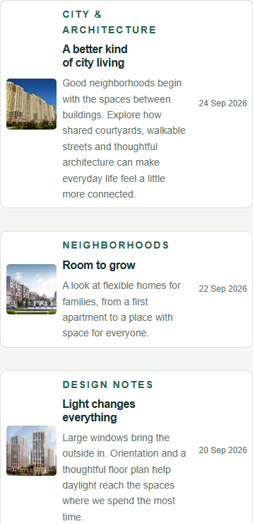
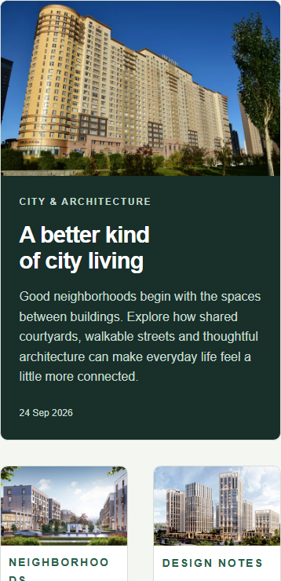
These screenshots show the upper portion of each layout at a narrow viewport. The same rules are used at every width; no media queries are needed.
| Browser check | Result |
|---|---|
| All five pages at 1440, 390 and 320 px | No horizontal overflow |
| Images on every page | All loaded |
| Composition dimensions | Square; within viewport height |
| Cards at desktop width | Equal heights; aligned buttons |
| Recommended pricing plan | Taller than adjacent plans |
| Articles in every layout | 12; identical markup |
The exercises show how Grid handles two-dimensional placement and how Flexbox handles alignment and distribution along one axis. Fluid track sizes, wrapping, automatic margins and content-driven heights make layouts respond to both screen size and changing text.